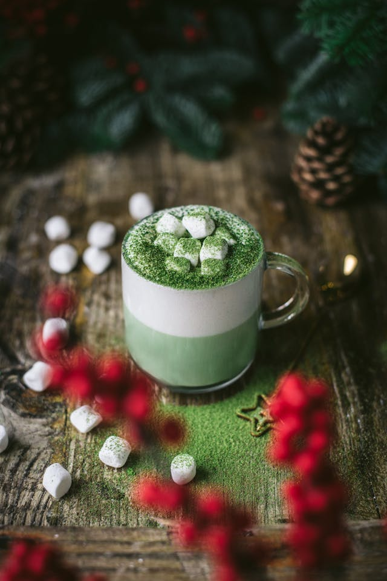

Matcha Latte

Description
Ingredients
A matcha latte is a vibrant green drink made with finely ground matcha green tea powder, combined with steamed
milk, and often sweetened for a smooth, creamy beverage with a slightly earthy flavor.
- Matcha powder (high-quality green tea powder)
- Milk (dairy or plant-based)
- Sweetener (honey, sugar, or agave - optional)
- Hot water
Steps
- Prepare the matcha: In a small bowl, whisk 1-2 teaspoons of matcha powder with a small amount of hot water (about 2 oz) until it becomes a smooth paste. You can use a bamboo whisk for traditional preparation or a regular whisk.
- Steam the milk: Heat and steam your milk until it’s hot and frothy (you can use a frother or steam wand).
- Combine: Pour the steamed milk into the prepared matcha paste, stirring gently to combine.
- Sweeten: Add your desired sweetener (honey or sugar) and stir until dissolved.
- Serve: Pour the matcha latte into a mug, and optionally top with a little extra matcha powder or a sprinkle of cinnamon for added flavor.
Enjoy your creamy, antioxidant-packed matcha latte!